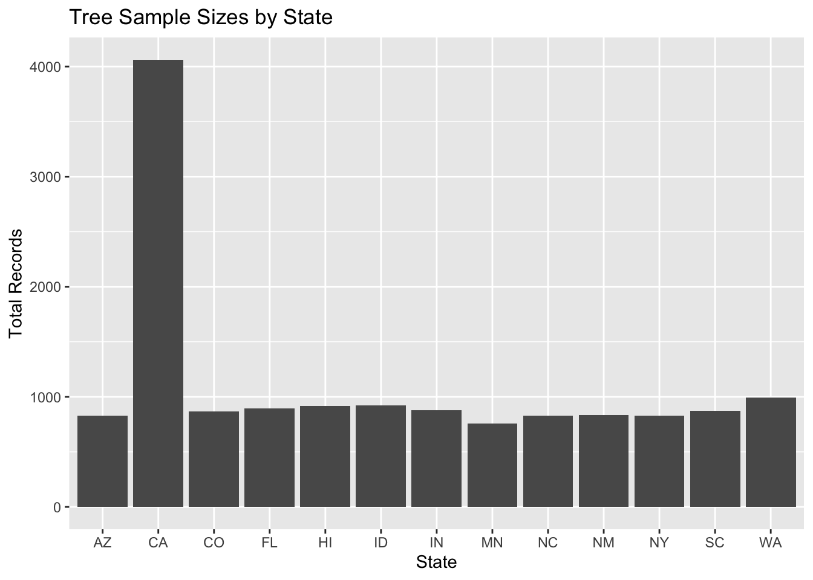

# Place your analysis code in this file; you must not rename it, though you may delete these instructions. Please update the block above with the name of the assignment and with your name.When you push your code to github, it will automatically be rendered for grading. You can see whether the automatic rendering worked in the "Actions" tab of the github repository.
# If you use any libraries other than `tidyverse`, `lubridate`, `sf`, `ggplot2`, `here`, `terra`, `ggspatial`, `rJavaEnv`, and `r5r`, add them to the list in the DESCRIPTION file.PLAN 372 Homework 6: Text Management
# Load library
library(tidyverse)── Attaching core tidyverse packages ──────────────────────── tidyverse 2.0.0 ──
✔ dplyr 1.1.4 ✔ readr 2.1.6
✔ forcats 1.0.1 ✔ stringr 1.6.0
✔ ggplot2 4.0.1 ✔ tibble 3.3.0
✔ lubridate 1.9.4 ✔ tidyr 1.3.2
✔ purrr 1.2.0
── Conflicts ────────────────────────────────────────── tidyverse_conflicts() ──
✖ dplyr::filter() masks stats::filter()
✖ dplyr::lag() masks stats::lag()
ℹ Use the conflicted package (<http://conflicted.r-lib.org/>) to force all conflicts to become errors# Load dataset
trees <- read_csv("TS3_Raw_tree_data.csv")Rows: 14487 Columns: 41
── Column specification ────────────────────────────────────────────────────────
Delimiter: ","
chr (15): Region, City, Source, Zone, Park/Street, SpCode, ScientificName, C...
dbl (25): DbaseID, cell, Age, DBH (cm), TreeHt (m), CrnBase, CrnHt (m), Cdia...
num (1): TreeID
ℹ Use `spec()` to retrieve the full column specification for this data.
ℹ Specify the column types or set `show_col_types = FALSE` to quiet this message.Question 1
# Extract city and state into separate columns using regular expressions.
trees[, c("city_name", "state")] <- str_match(trees$City, "^(.*),[:space:]+([:alpha:]{2})$")[, 2:3]
# Group by the state column and count records
state_counts <- trees %>%
group_by(state) %>%
summarize(total_records = n())
# Plot the sample sizes
ggplot(state_counts, aes(x = state, y = total_records)) +
geom_col() +
labs(
title = "Tree Sample Sizes by State",
x = "State",
y = "Total Records")
# Show table for exact number
state_counts# A tibble: 13 × 2
state total_records
<chr> <int>
1 AZ 827
2 CA 4062
3 CO 867
4 FL 895
5 HI 918
6 ID 923
7 IN 877
8 MN 760
9 NC 828
10 NM 833
11 NY 831
12 SC 872
13 WA 994Question 2
# Filter the dataset to only these states.
nc_sc_trees <- trees %>%
filter(state == "NC" | state == "SC")
# Output the unique cities from our filtered data
unique(nc_sc_trees$city_name)[1] "Charleston" "Charlotte" Data was collected from two cities in the Carolinas: Charlotte (NC) and Charleston (SC).
Question 3
# Extract just the Genus from the ScientificName column.
nc_sc_trees$genus <- str_match(nc_sc_trees$ScientificName, "^([:alpha:]+)")[, 2]
# Group by genus, calculate the mean canopy diameter, and find the largest
nc_sc_trees %>%
group_by(genus) %>%
summarize(avg_crown = mean(`AvgCdia (m)`, na.rm = TRUE)) %>%
arrange(-avg_crown) %>%
head(5)# A tibble: 5 × 2
genus avg_crown
<chr> <dbl>
1 Quercus 13.6
2 Platanus 12.0
3 Acer 11.5
4 Carya 10.5
5 Betula 10.4The Quercus genus has the largest average crown diameter in North and South Carolina, measuring approximately 13.62 meters
Question 4
# Check if average age might explain the crown size differences
nc_sc_trees %>%
group_by(genus) %>%
summarize(avg_age = mean(Age, na.rm = TRUE),
avg_crown = mean(`AvgCdia (m)`, na.rm = TRUE)) %>%
arrange(-avg_age)# A tibble: 20 × 3
genus avg_age avg_crown
<chr> <dbl> <dbl>
1 Quercus 35.6 13.6
2 Magnolia 29.1 7.98
3 Carya 29.0 10.5
4 Platanus 27.7 12.0
5 Juniperus 26.5 6.01
6 Sabal 26.1 3.96
7 Pinus 25.2 8.66
8 Liquidambar 25.0 9.98
9 Celtis 24.9 9.45
10 Acer 24.5 11.5
11 Ilex 22.8 4.71
12 Butia 20.6 4.69
13 Betula 19.0 10.4
14 Lagerstroemia 18.8 6.26
15 Gleditsia 17.9 7.67
16 Cornus 17.4 6.53
17 Ulmus 17.2 9.96
18 Prunus 16.8 9.27
19 Pyrus 16.2 7.47
20 Malus 12.1 6.63No, age does not fully explain the differences in crown size. While the genus with the largest crown (Quercus) also happens to be the oldest on average, there is no consistent relationship between age and crown size across the rest of the dataset. For example, Magnolia is the second oldest genus (29.1 years) but has a relatively small crown (7.98m), while Acer is younger (24.4 years) but has a much larger crown (11.45m). This indicates that intrinsic species characteristics and genetics dictate crown size much more than age alone.
Extra Credit: Genera Recommendation
# Create a new column representing the growth rate (Crown Size / Age), then find the highest average.
nc_sc_trees %>%
# filter out trees with an age of 0 to avoid dividing by zero
filter(Age > 0) %>%
mutate(growth_rate = `AvgCdia (m)` / Age) %>%
group_by(genus) %>%
summarize(avg_growth_rate = mean(growth_rate, na.rm = TRUE)) %>%
arrange(-avg_growth_rate) %>%
head(5)# A tibble: 5 × 2
genus avg_growth_rate
<chr> <dbl>
1 Prunus 0.644
2 Malus 0.608
3 Ulmus 0.605
4 Betula 0.603
5 Acer 0.561To determine this, I created a new metric called growth_rate by dividing the crown diameter by the tree’s age. Based on this metric, the Prunus genus is recommended, as it produces a large crown the fastest with an average growth rate of 0.64 meters per year.
Extra Credit: Species
# Remove the " x " from hybrid plants using str_replace
trees_cleaned <- trees %>%
mutate(clean_name = str_replace(ScientificName, "[:space:]x[:space:]", " "))
# Now, extract the Genus and Species using two capture groups.
# Extract exactly two words at the START of the string (^)
# By specifying with (^) ignores additional information like trailing cultivars ('Fastigiata') or varieties (var. silicicola)
trees_cleaned[, c("genus", "species")] <- str_match(trees_cleaned$clean_name, "^([:alpha:]+)[:space:]+([:alpha:]+)")[, 2:3]
# Count the distinct species per genus
trees_cleaned %>%
group_by(genus) %>%
summarize(num_species = n_distinct(species))# A tibble: 85 × 2
genus num_species
<chr> <int>
1 Acacia 3
2 Acer 7
3 Aesculus 1
4 Bauhinia 1
5 Betula 2
6 Brachychiton 1
7 Butia 1
8 Callistemon 1
9 Calocedrus 1
10 Calophyllum 1
# ℹ 75 more rowsAI reflection
For this assignment, I utilized an AI language model acting as an R tutor to assist with the minor formatting of my code. This tool strongly supported my learning by helping me troubleshoot code syntax and interpret the output tables critically, which allowed me to better understand the underlying data wrangling concepts from lecture.